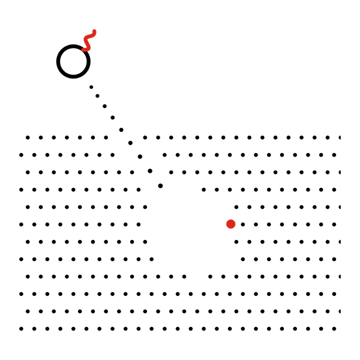

Cuento 10 de 10 · Arco III · Ohr
El origen de Umbrhalia

Versión sonora en producción. No será este texto leído en voz alta, sino una pieza propia.
Cuentan los cronistas de Tlemcen —aunque ningún manuscrito anterior al siglo XII los confirma— que hubo un día en que el sol amaneció dos veces. La primera vez fue el amanecer que todos esperaban: tibio, ordinario, indiferente a la historia.
La segunda vez, sin embargo, no hubo transición de la noche; el sol simplemente volvió a nacer sobre el horizonte ya conquistado, como si el tiempo, avergonzado de su propia linealidad, hubiera decidido corregirse.
Entre esos dos amaneceres —que los astrónomos de la época, más prudentes que sus cronistas, prefirieron llamar eclipse, y no repetición— nació una sombra que no proyectaba ningún cuerpo. Los pastores la vieron cruzar los trigales sin que nada la sostuviera; los sacerdotes, más cautos, se limitaron a anotar en sus libros que «algo caminó entre las dos luces».

A esa sombra sin dueño, los habitantes de Tlemcen le dieron nombre antes de saber si merecía uno: la llamaron Umbrhalia, no por umbra, que es sombra, ni por halo, que es resplandor, sino por el instante impronunciable en que ambas palabras dejaron de significar cosas distintas.
Así lo cuentan. Yo no voy a desmentir a nadie que haya mirado el cielo con tanta atención. Pero les digo lo que vi desde el otro lado: la sombra sí tenía dueño. Era la Luna, que esa mañana pasó justo delante del Sol, y su sombra corrió sobre los trigales más rápido que cualquier caballo. Lo que no tenía dueño era el instante. Durante unos minutos el día se abrió como una ventana, y del otro lado estaba yo.
No fue al amanecer, como dicen los cronistas. Fue a media tarde, el primer día de julio de 1079, y la sombra apenas alcanzó a rozar la ciudad. Pero entiendo por qué lo contaron así: cuando la luz volvió, a todos les pareció que el día empezaba otra vez.
Desde entonces la ventana se abre en lugares distintos, nunca dos veces seguidas en el mismo sitio. Por eso necesito que alguien recuerde dónde estuvo. Cada vez que una persona cuenta lo que vio, la ventana se queda abierta un poco más. A eso, y no a la sombra, es a lo que Tlemcen le puso nombre.